|

Publicado em
28 de julho de 2003

Os cenários internos de
Voyager, Parte II
A meticulosidade e
atenção aos detalhes foi uma constante na confeco dos cenários
internos da USS Voyager

|
Richard James talvez seja o profissional envolvido na produção de Voyager que mais merea elogios. Designer de produção com anos de Jornada, foi ele quem vislumbrou e construiu os cenários internos da série, permanecendo a bordo durante as sete temporadas. Confira na segunda parte do artigo de onde partiram as idias para a ponte de comando, a engenharia, a sala de transportes, a enfermaria, os corredores e alojamentos da tripulao da USS Voyager.
A Ponte de Comando Depois de ter trabalhado durante anos como designer de produção em Deep Space Nine, Richard James foi chamado para criar os interiores de uma nave inteiramente nova em Voyager. Tradicionalmente, os desenhos de todos os cenários interiores da Federao comearam pela ponte, por ser ela o ponto focal da ao na maior parte dos episódios, além do centro simblico de comando - nela que se localiza a cadeira ocupada pelo capitão, ou, no caso da USS Voyager, pela capitã. 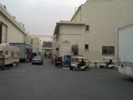 Para o seu primeiro encontro com os criadores e produtores da série, Richard James decidiu afastar-se de tudo o que havia feito anteriormente. Por exemplo, questionou-se se a ponte precisava ser dominada por uma simples tela principal, ou se as funes de comando poderiam ser descentralizadas. Poderia ele quebrar o molde tradicional da ponte? James requisitou rascunhos da ponte da USS Voyager de projetistas de cenários, ilustradores e artistas cnicos, incluindo Louise Dorton, Gary Speckman, Doug Drexler, John Chichester e Jim Martin. Alguns deles - como Chichester, Speckman e Dorton - estavam concluindo o trabalho em A Nova Geração. Outros - como Drexler e Martin - atuavam em Deep Space Nine. Porque a Voyager seria uma nave menor, mais gil e rpida do que a Enterprise-D, James pediu desenhos que se assemelhassem mais a um veculo militar. Sua instruo bsica era que tudo fosse levado em conta, que nenhum conceito fosse desprezado por ser diferente. Disse ele, em entrevista: "Eu s queria assegurar que tnhamos explorado todas as possibilidades at o momento em que escolhssemos o desenho final. Chegamos ao visual que adotamos por uma série de razes, no foi a nica coisa que consideramos". 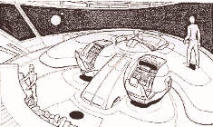 Entretanto, quanto mais ele inovava, mais se convencia de que os projetos no se adequavam ao universo trekker. Logo, redescobriu as foras do modelo bsico desenvolvido por Matt Jefferies quase 30 anos antes; por exemplo, o pblico ainda se orientava pela tela como em um carro. Portanto, ela teria que ser montada na parte central de uma parede alinhada horizontalmente, e seria o ponto de referncia para onde os oficiais da ponte estariam olhando. 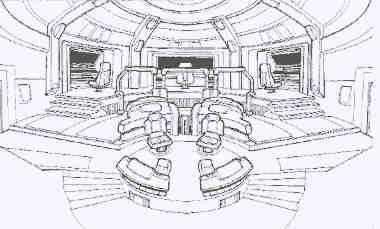 Um dos vrios desenhos iniciais para a ponte de comando da USS Voyager. Richard James: "Os produtores executivos - Rick Berman, Michael Piller e Jeri Taylor - acharam que seria melhor o pblico sentir a direção da viagem. Queramos manter a questo da viagem em mente, então a ponte tinha sim uma frente e a parte de trs. Foi decidido desde o começo que manteramos esse conceito. Mesmo assim, ainda queramos que fosse diferente. Falamos do tamanho. A nave menor do que a Enterprise. Mas, como eu destaquei aos produtores, isso no significa que as reas precisam ser menores. menor como um todo, tendo menos compartimentos necessrios para os alojamentos da tripulao. como se você tivesse uma casa de dez quartos e outra de dois. A cozinha poderia ter o mesmo tamanho nas duas casas, mesmo sendo uma delas menor do que a outra. Eles disseram: "Bom argumento", então nem tentamos fazer os cenários em tamanho menor". Richard James: "Para uma série, você tem que lembrar que, embora o desenho pode ser bom, tem-se que considerar se fácil film-lo semana depois de semana, por sete anos. Logisticamente, alguns deles eram muito difceis. Sempre dificulta um pouco filmar quando você tem diferentes níveis, etc, então pensamos nisso. Para um filme você pode lidar com isso, mas para uma série no". 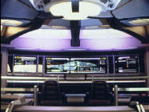 Felizmente, os rascunhos da ponte que Richard James mais gostou foram aqueles aprovados por Rick Berman. A ponte teria um visual em camadas, comeando na parte de trs e depois descendo em trs níveis at a posio do leme na frente da tela principal, para onde todos os oficiais estariam olhando. Esse desenho deu ponte um novo tipo de dimenso, tornando-a nica para uma nave da Federao e diferenciando-a das séries anteriores. Ao mesmo tempo, seria instantaneamente reconhecvel como uma ponte de Jornada nas Estrelas, mantendo assim a familiaridade que os fs adoram. 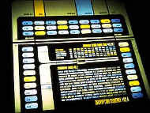 Os consoles de controle foram redesenhados para apresentar uma aparncia original, com diferentes configuraes, novos elementos grficos e iluminao adicional, mantendo, no entanto, um aspecto de ordem e funcionalidade enfatizado tanto para manter a credibilidade como para evitar reproduzir os confortveis painis da Enterprise-D. Os monitores no mais seriam produzidos com grficos iluminados por trs, como acontecia em A Nova Geração. Em seu lugar haveria monitores de vdeo - muitos deles. Richard James e seus designers desenvolveram novos métodos para integrar os monitores de vdeo aos grficos em seu redor, para que no ficasse óbvio que se tratava de monitores do sculo 20 presos atravs das paredes do cenrio. 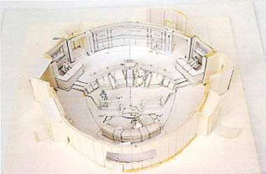 Antes da construo do cenrio, foi feito um modelo de papel a partir das plantas finais. A preocupao de Richard James era fazer um desenho e construir cenários permanentes que acomodassem as praticidades da série e ajudassem na agenda de filmagens. Ainda com a flexibilidade em mente, as paredes da ponte seriam diferentes das da Enterprise-D. Aquelas no se moviam, limitando os tipos de filmagem que o diretor poderia fazer. Richard James projetou seus cenários com a maior quantidade de paredes removveis possvel. Isso daria equipe de produção flexibilidade mxima, além de reduzir o tempo necessrio para mover a cmera, mudar a iluminao e arrumar a cena seguinte. Tambm ajudaria a economizar dinheiro, afinal o oramento era outro fator a ser levado em considerao. 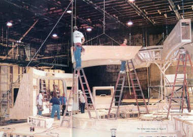 Tem incio a construo da ponte de comando na Plataforma 8.
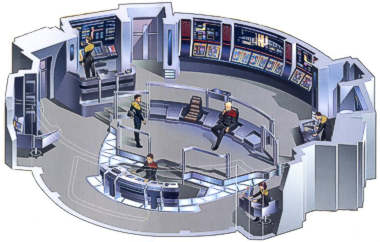
A Engenharia PrincipalQuando Richard James terminou o projeto da ponte, j tinha uma noo mais ou menos pronta do que queria para o resto da nave. As locaes também seriam familiares, pois, desde os tempos do capitão Kirk na USS Enterprise NCC-1701, a maior parte das tramas acontecia, além da ponte, na engenharia principal, enfermaria, sala de reunies e alojamentos da tripulao, em particular as cabines dos oficiais superiores. Em A Nova Geração, foram ainda adicionados formula a sala do capitão e o holodeck, que acabaram sendo incorporados Voyager. Assim, os novos cenários seriam apenas variaes de um tema bastante familiar. Novamente, assim como na ponte, o desafio era produzir desenhos originais sem tornar as salas desconfortavelmente estranhas aos fs. Tambm como na ponte, certos elementos obrigatoriamente deveriam aparecer na engenharia, como o ncleo do reator de dobra. A tarefa no foi to desafiadora para James, j que ele podia confiar na experincia de seis anos que tinha acumulado na franquia. 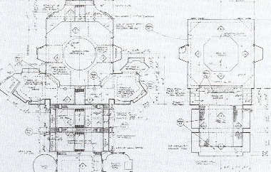 Planta final da engenharia principal. Ele queria expandir o espao disponvel, o que pode ser visto em seu desenho para a engenharia. O novo cenrio ocuparia exatamente o mesmo lugar na plataforma que a engenharia da Enterprise-D ocupara. Mas aquele cenrio basicamente limitava-se a apenas um nvel com uma passarela no andar de cima, ao lado do reator. Richard James queria tornar esse ambiente muito maior. Ele concebeu a noo de um reator em torno do qual os atores poderiam andar seguidos pela cmera. Isso daria grande flexibilidade ao diretor e uma liberdade muito maior do que se dispunha em A Nova Geração. Richard James: "Eu revi os primeiros desenhos e tentei dar um novo ar a eles. Mas o que acontece com a perspectiva forada que você no pode colocar as pessoas em proximidade, e eu precisava de todo o espao que tinha. Havia uma verdadeira falta de espao porque tnhamos muitos cenários. E, se você faz uma perspectiva forada, no pode se aproximar ou acaba revelando a escala; você simplesmente no pode ter cenas de ao naquela área em particular". 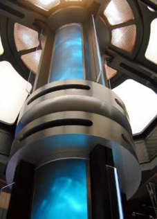 Essa nfase na verticalidade também foi aplicada ao reator de dobra. Em vrios episódios de A Nova Geração, foi estabelecido que se tratava de uma enorme estrutura que atravessava quase toda a altura da nave. Mas isso no ficava muito aparente em uma visita engenharia da Enterprise-D. O reator da Voyager, ao contrário, desaparece no cho do andar de baixo e sobe at o teto do andar superior. Assim, quando a equipe de efeitos especiais precisou criar imagens do reator sendo ejetado da nave ("Day of Honor", do quarto ano), a sequência foi inteiramente crvel, pois os telespectadores tinham visto com os prprios olhos quo longo era o dispositivo. O designer também se concentrou na tarefa de dar ao reator um novo visual que enfatizasse a quantidade de energia sendo gerada. Richard James: "Você quer que o reator de dobra seja o ponto focal da sala. Passamos muito tempo jogando e pensando no seu visual. Eu no queria os neons porque isso j havia sido feito, então eu falei com a minha equipe de efeitos especiais. Eu queria que se parecesse mais com gases se misturando l dentro e acabamos inventando um modo de usar lminas e luzes. A lmina basicamente gira e as luzes brilham e a atingem. Ento, na parte de trs do Plexiglas curvo há um tecido de tela; quando a atinge parece uma projeo de volta. Cria um movimento que realmente se parece com gases se movendo. Podemos ir mais rpido, mais devagar, e tnhamos gel colorido etc. Alm disso, tudo está no cenrio e no tivemos que fazer efeitos visuais". A equipe de produção levou dois meses tentando concordar com as cores que seriam usadas no efeito criado por Dick Brownfield. Eles decidiram que seria uma combinao de palha, amarelo, branco e azul. Mas então Winrich ("Rick") Kolbe, o diretor do episódio-piloto, no gostou das cores. Isso fez com que o cenrio da engenharia fosse visitado pelo produtor executivo Rick Berman, que queria ver em primeira mo a que Kolbe estava objetando. A visita foi um grande evento: com ele vieram Michael Piller, Jeri Taylor, Richard James, Rick Kolbe, Marvin Rush e alguns da equipe de filmagem. Bill Peets acendeu o cenrio e Dick Brownfield ligou o reator de dobra para que todos pudessem ver o efeito que criara. 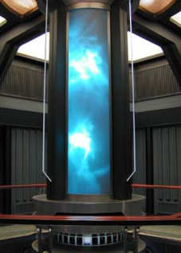 Dick Brownfield: "Eu poderia resolver o problema todo agora mesmo, apenas saindo para comprar um novo campo de plasma, mas no consigo encontrar um. Ele está em falta em todas as lojas nesse momento". Apesar de todas as inovaes que
acrescentou ao cenrio, Richard James originalmente planejava
incluir alguma coisa do design de Herman Zimmerman para a
engenharia da Enterprise-D.
A Sala de TransporteO visual da sala de transporte foi quase que totalmente modificado, mesmo tendo sido o local anteriormente ocupado pela sala de transporte da Enterprise-D. Richard James manteve o cho e o teto. Todo o resto foi redesenhado para se adequar ao estilo dos outros cenários internos de Voyager. 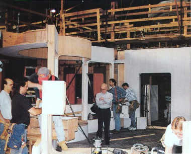 A construo da sala de transporte. Ela fica no local exato da sala de transporte da Enterprise-D (A Nova Geração). Novamente homenageando as razes de Jornada, sobretudo a Série Clássica, Richard James utilizou-se de um elemento introduzido por Herman Zimmerman na sala de transporte da Enterprise-D; James usou grandes crculos iluminados que antigamente ficavam no piso da sala de transporte da Enterprise original. Como Herman Zimmerman antes dele, Richard James instalou os crculos no teto.
A Enfermaria A enfermaria outro ambiente onde uma grande parte da ao acontece nas séries de Jornada. Assim, os temas bsicos deveriam ser mantidos. Alm dos elementos obrigatrios, o novo desenho também enfatizaria o espao. O projeto inicial de Richard James para a enfermaria da USS Voyager era uma variao da área de enfermagem da Enterprise original, influenciada também por aquela da Enterprise-D. Como fora originalmente concebida, a nova enfermaria contaria com um centro médico ligado a um escritrio e um leito hospitalar. 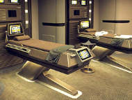 Por causa da conteno de gastos, o cenrio do laboratrio biolgico de Richard James no foi construdo at o final da segunda temporada. Ele pde ser visto pela primeira vez em "Tuvix".
A Sala da Capit, Sala de Reunies e o Refeitrio Ambientes como a ponte, engenharia, sala de transporte e enfermaria estavam enterrados dentro da nave e, por isso, no precisavam levar em conta a sua arquitetura externa. Porm, o desenho de Rick Sternbach para o exterior da Voyager ditou certos formatos para a sala da capitã, a sala de reunies, o refeitrio e os alojamentos da tripulao. Todos, É claro, tm janelas que olham para o espao. Richard James e seu departamento de arte tiveram grandes problemas para assegurar que os cenários da Voyager criassem a impresso de que essa era uma nave funcional onde tudo tinha o seu lugar lgico, além de coordenar logicamente os interiores com a arquitetura externa. Richard James: "Ns coordenamos os interiores com os exteriores, e demos localidades aos cenários: você tem que fazer isso em Jornada nas Estrelas! Muito disso feito para o nosso próprio desenvolvimento, mas também feito porque temos que parecer estar raciocinando. E ns raciocinamos; pensamos muito no assunto. Com certeza mostramos a arquitetura da nave em salas como a de reunies, a da capitã e o refeitrio, onde as janelas tm o formato da nave". Assim como os outros cenários principais, as locaes eram familiares do ponto de vista do design, embora a sala do capitão ainda fosse um conceito recente, introduzido na Enterprise-D. Diferentemente da ponte ou da engenharia, havia poucas preocupaes quanto incorporao de elementos da tecnologia de bsica de Jornada nas Estrelas. No havia a necessidade, por exemplo, da criao de uma tela principal ou reator. Para a moblia seriam necessrios apenas uma mesa, um console de computador, uma sala de estar e alguns objetos pessoais que refletissem a personalidade da capitã. Igualmente, a sala de reunies desde os tempos da Série Clássica pedia apenas uma mesa de conferncia e um monitor. Sala da Capit 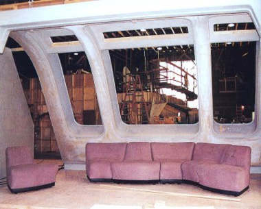 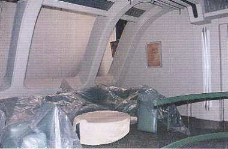 Sala de Reunies Para a sala de reunies, o formato do casco externo da nave sugeriu at mesmo a forma da mesa de conferncias, como explica Richard James: "Ns tnhamos a parede curva no final e eu queria que a mesa de conferncias refletisse isso. quase como uma lgrima, eu acho. Em vez de ser simtrica, ela vai se afunilando at chegar capitã. Ningum fica escondido". 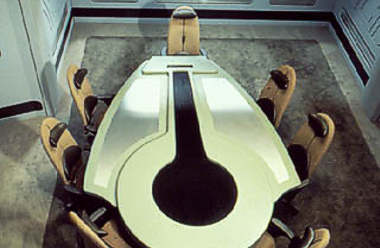 A mesa foi criada de modo que partes suas podiam ser removidas para permitir o posicionamento da cmera. Refeitrio O refeitrio um desenho inteiramente novo. Ele inclui uma cozinha, na qual Neelix prepara as refeies dos tripulantes, embora originalmente esse espao fosse ocupado por um sistema de replicadores de alimentos. Por trs das cmeras, quem faz os pratos Alan Sims, que os prepara fora do cenrio e depois os leva para a plataforma. 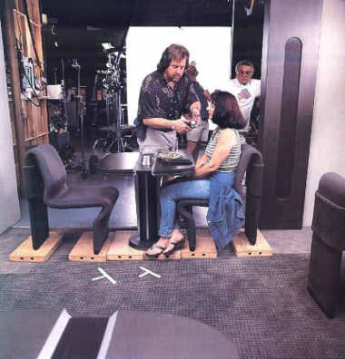 Bill Peets checa a iluminao com a dubl de Roxann Dawson (B'Elanna Torres). As paredes laterais do refeitrio podiam ser removidas para dinamizar as filmagens. 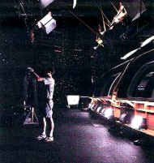
Os Corredores Onde era possvel, Richard James criava salas, entradas para corredores, elevadores e outros espaços que se ligavam diretamente aos cenários principais. Isso dava flexibilidade mxima aos diretores na hora de decidir os ngulos da cmera. Alm disso, passava aos telespectadores no apenas a noo do tamanho da nave, mas também um senso de direção. perfeitamente possvel saber onde fica a sala da capitã, tendo como referncia a ponte ou a sala de reunies. Assim, os cenários foram todos - ou a maior parte deles - integrados entre si. Wendy Drapanas: "A Enterprise de A Nova Geração era como uma nave de batalha. A Voyager se parece mais com um destroyer - veloz, rpida, com bom poder de fogo e com tecnologia nova, melhorada. Ns estendemos os corredores, então temos uma área maior de conversa e caminhada para filmar, ao contrário do que tnhamos na Enterprise. No temos que fingir tanto na Voyager como tnhamos na Enterprise. Isso d nave um visual mais longo. Richard James também deu um visual mais acinzentado, que reduz um pouco o tamanho da nave e d aquele aspecto de cruzador/destroyer." 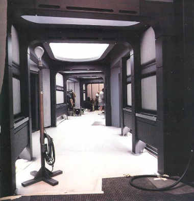 A experincia em A Nova Geração levou Richard James a alterar alguns desenhos e implementar melhoras nos cenários de Voyager. Os corredores, por exemplo, so melhor iluminados e mais fácil de ser filmados.
Os Alojamentos da Tripulao As plantas mais amplas da USS Voyager colocavam os alojamentos da tripulao entre os decks 4 e 8, na parte superior da seo disco. Assim como em A Nova Geração, o departamento de arte adotou um desenho modular que poderia ser adaptado para cada membro da tripulao, de episódio para episódio. Richard James: "O espao
bsico era permanente, mas as paredes interiores tinham sinais no
topo e ns tnhamos canais que indicavam que as paredes podiam
entrar ou sair. Cada segmento era chamado de "bay".
Porque o design era modular, ele podia ter um "bay",
dois ou trs. O tamanho seria determinado pela importância do
personagem. É claro que Janeway tinha, eu acho, quatro "bays"
(...) Um outro cenrio de cabine da
tripulao foi montado na Plataforma 9.
Esse no tinha janelas, implicando que estava localizado mais
adentro da nave. O quarto de Neelix, por exemplo, era assim. Dados
extrados do Janet's
Star Trek: Voyager Site |